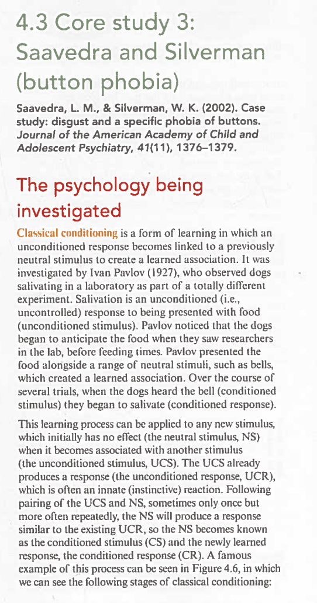
Classical conditioning（经典条件反射） is a form of learning in which an unconditioned response becomes linked to a previously neutral stimulus to create a learned association. It was first investigated by Ivan Pavlov (1927), who observed dogs salivating in a laboratory as part of a totally different experiment.
Pavlov noticed that the dogs began to anticipate food when they saw researchers in the lab, before feeding times. He presented food alongside a range of neutral stimuli, such as bells, which created a learned association. Over several trials, when the dogs heard the bell (conditioned stimulus 条件刺激) they began to salivate (conditioned response 条件反应).
| Stage 阶段 | Stimulus 刺激 | Response 反应 |
|---|---|---|
| 1. Before conditioning 条件反射建立前 | Unconditioned stimulus (food) 无条件刺激（食物） | Unconditioned response (salivation) 无条件反应（流口水） |
| 2. Before conditioning 条件反射建立前 | Neutral stimulus (bell ringing) 中性刺激（铃声） | No response 无反应 |
| 3. During conditioning 条件反射建立中 | Unconditioned stimulus (food) + Neutral stimulus (bell) 食物 + 铃声配对 | Unconditioned response (salivation) 无条件反应（流口水） |
| 4. After conditioning 条件反射建立后 | Conditioned stimulus (bell ringing) 条件刺激（铃声） | Conditioned response (salivation) 条件反应（流口水） |
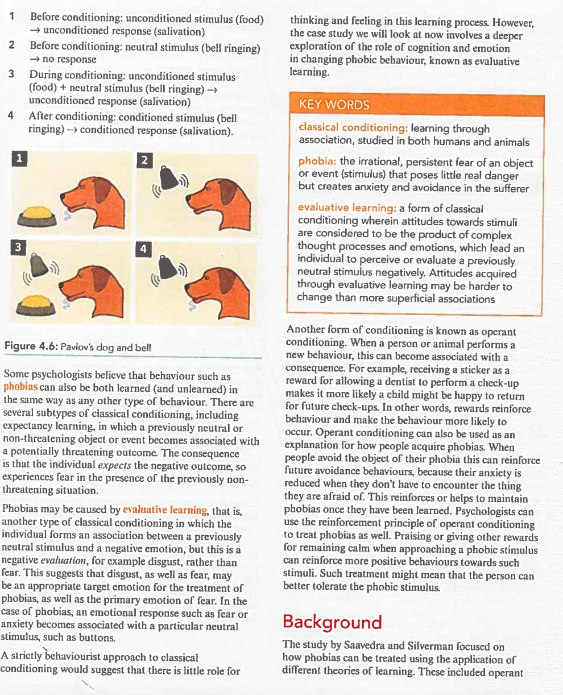
classical conditioning（经典条件反射）: learning through association, studied in both humans and animals. A previously neutral stimulus becomes linked to an unconditioned stimulus to produce a conditioned response.
phobia（恐惧症）: the irrational, persistent fear of an object or event that creates anxiety and poses little real danger but creates anxiety and avoidance in the sufferer.
evaluative learning（评估性学习）: a form of classical conditioning wherein attitudes towards stimuli are considered to be the product of complex thought processes and emotions, which lead an individual to perceive or evaluate a previously neutral stimulus negatively. Attitudes acquired through evaluative learning may be harder to change than more superficial associations.
Some psychologists believe that behaviours such as phobias（恐惧症） can also be learned (and unlearned) in the same way as any other type of behaviour. There are several subtypes of classical conditioning:
This suggests that disgust, as well as fear, may be an appropriate target emotion for the treatment of phobias, as well as the primary emotion of fear. In the case of phobias, an emotional response such as fear or anxiety becomes associated with a particular neutral stimulus, such as buttons.
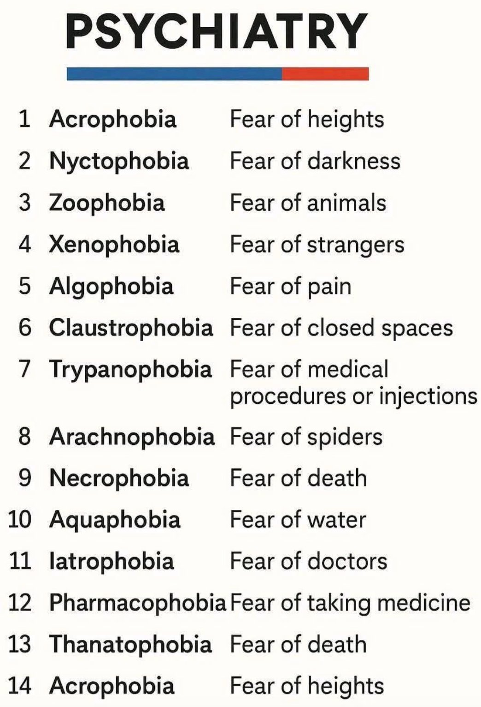
Another form of conditioning is known as operant conditioning（操作性条件反射）. When a person or animal performs a new behaviour, this can become associated with a consequence. For example, receiving a sticker as a reward for allowing the dentist to perform a check-up makes it more likely a child might be happy to return for future check-ups.
In other words, rewards reinforce behaviour and make the behaviour more likely to be used again. Operant conditioning can also be used as an explanation for how people acquire phobias. When people avoid the object of their phobia this can reinforce future avoidance behaviours, because their anxiety is reduced when they haven't have encountered the thing they are afraid of. This reinforces or helps to maintain phobias once they have been learned.
Psychologists can use the reinforcement principle of operant conditioning to treat phobias as well. Praising or giving other rewards for remaining calm when approaching a phobic stimulus can reinforce more positive behaviours towards such stimuli. Such treatment might mean that the person can better tolerate the phobic stimulus.
Humans and many animals share cognitive and behavioural characteristics:
The study by Saavedra and Silverman focused on how phobias can be treated using the application of different theories of learning. These included operant conditioning to reinforce desirable behaviour. The researchers compared this treatment to evaluative learning as a form of classical conditioning to reduce feelings of disgust.
From their study of adults with a blood phobia, Hepburn and Page (1999) suggested that treating patients' disgust, as well as their fear, would help them to make progress. De Jong et al. (1997) worked with children who had a spider phobia. Although no attempt was made to manipulate feelings of disgust, their feelings of disgust declined alongside their reduction in fear.
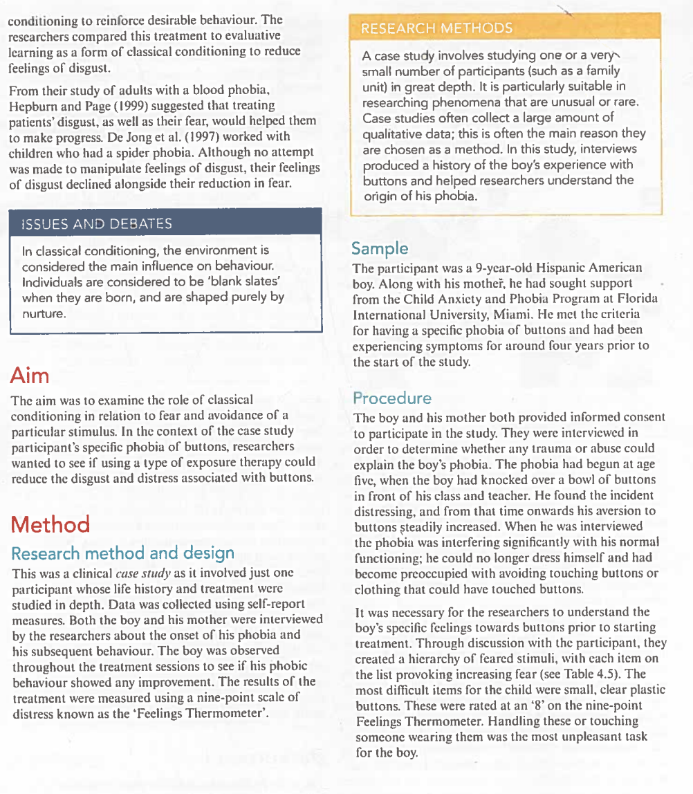
The aim was to examine the role of classical conditioning in relation to fear and avoidance of a particular stimulus. In the context of this case study participant's specific phobia of buttons, researchers wanted to see if using a type of exposure therapy could reduce the disgust and distress associated with buttons.
研究目标是检验经典条件反射在恐惧和回避特定刺激中的作用。在这个按钮恐惧症的案例中，研究者想看看暴露疗法能否减少与按钮相关的厌恶和痛苦。
This was a clinical case study（案例研究） as it involved just one participant whose life history and treatment were studied in depth. Data was collected using self-report measures. Both the boy and his mother were interviewed by the researchers about the onset of his subsequent behaviour. The boy was observed throughout the treatment sessions to see if his phobic behaviour showed any improvement. The results of the treatment were measured using a nine-point scale of distress known as the 'Feelings Thermometer'（情感温度计）.
A case study（案例研究） involves studying one or a very small number of participants (such as a family unit) in great depth. It is particularly suitable in researching phenomena that are unusual or rare. Case studies often collect a large amount of qualitative data; this is often the main reason they are chosen as a method. In this study, interviews produced a history of the boy's experience with buttons and helped researchers understand the origin of his phobia.
The participant was a 9-year-old Hispanic American boy. Along with his mother, he had sought support from the Child Anxiety and Phobia Program at Florida International University, Miami. He met the criteria for having a specific phobia of buttons and had been experiencing symptoms for around four years prior to the start of the study.
The phobia had begun at age five, when he was in kindergarten during an art project that involved buttons. He described the situation in which he ran out of buttons to paste on his posterboard and was asked to come to the front of his class and teacher. He found a bowl of buttons on his teacher's desk. When he reached for the bowl, his hand slipped and all the buttons in the bowl fell on him. He described this experience as distressing, and from that time onwards his aversion to buttons steadily increased.
When interviewed, the phobia was interfering significantly with his normal functioning: he could no longer dress himself and had become preoccupied with avoiding touching himself or clothing that could have touched buttons.
It was necessary for the researchers to understand the boy's specific feelings towards buttons prior to starting treatment. Through discussion with the participant, they created a hierarchy of feared stimuli, with each item on the list provoking increasing fear. Table 4.5 shows the most difficult items for the child were small, clear plastic buttons. These were rated at an "8" on the nine-point Feelings Thermometer. Handling these or touching someone wearing them was the most unpleasant task for the boy.
| # | Stimuli 刺激物 | Distress rating (0–8) 痛苦评分 |
|---|---|---|
| 1 | Large denim jean buttons 大号牛仔布纽扣 | 2 |
| 2 | Small denim jean buttons 小号牛仔布纽扣 | 3 |
| 3 | Clip-on denim jean buttons 牛仔夹式纽扣 | 3 |
| 4 | Large plastic buttons (coloured) 大号彩色塑料纽扣 | 4 |
| 5 | Large plastic buttons (clear) 大号透明塑料纽扣 | 4 |
| 6 | Hugging Mom when she wears large plastic buttons 妈妈穿大塑料纽扣衣服时拥抱她 | 5 |
| 7 | Medium plastic buttons (coloured) 中号彩色塑料纽扣 | 5 |
| 8 | Medium plastic buttons (clear) 中号透明塑料纽扣 | 6 |
| 9 | Hugging Mom when she wears regular medium plastic buttons 妈妈穿普通中号塑料纽扣时拥抱 | 7 |
| 10 | Small plastic buttons (coloured) 小号彩色塑料纽扣 | 8 |
| 11 | Small plastic buttons (clear) ⭐ 小号透明塑料纽扣（最难） | 8 |
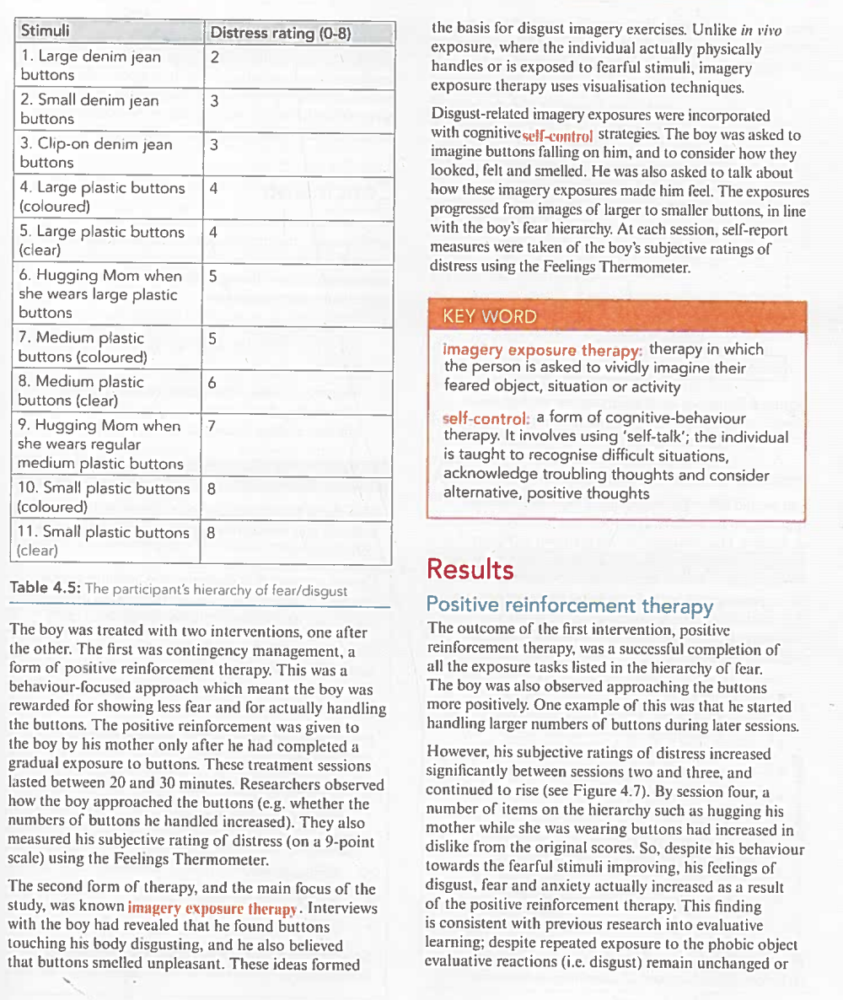
The boy was treated with two interventions, one after the other. The first was contingency management（权变管理）, a form of positive reinforcement therapy. This was a behaviour-focused approach which meant the boy was rewarded for showing less fear and for actually handling the buttons. The positive reinforcement was given to the boy by his mother only after he had completed a gradual exposure to buttons. These treatment sessions lasted between 20 and 30 minutes.
Researchers observed how the boy approached the buttons (e.g., whether the numbers of buttons he handled increased). They also measured his subjective rating of distress (on a 9-point scale) using the Feelings Thermometer.
imagery exposure therapy（意象暴露疗法）: therapy in which the person is asked to vividly imagine their feared object, situation or activity.
self-control（自我控制）: a form of cognitive-behavioural therapy. It involves using 'self-talk'; the individual is taught to recognise difficult situations, acknowledge troubling thoughts and consider alternative, positive thoughts.
The second form of therapy, and the main focus of the study, was known as imagery exposure therapy（意象暴露疗法）. Interviews with the boy had revealed that he found touching his body disgusting, and he also believed that buttons smelt unpleasant. These ideas formed the basis for disgust imagery exercises.
Unlike in vivo exposure (where the individual actually physically handles or is exposed to fearful stimuli), imagery exposure therapy uses visualisation techniques. Disgust-related imagery exposures were incorporated with cognitive self-control strategies（自我控制策略）.
The boy was asked to imagine buttons falling on him, and to consider how they looked, felt and smelled. He was also asked to talk about how these imagery exposures made him feel. The exposures progressed from images of larger to smaller buttons, in line with the boy's fear hierarchy. At each session, self-report measures were taken of the boy's subjective ratings of distress using the Feelings Thermometer.
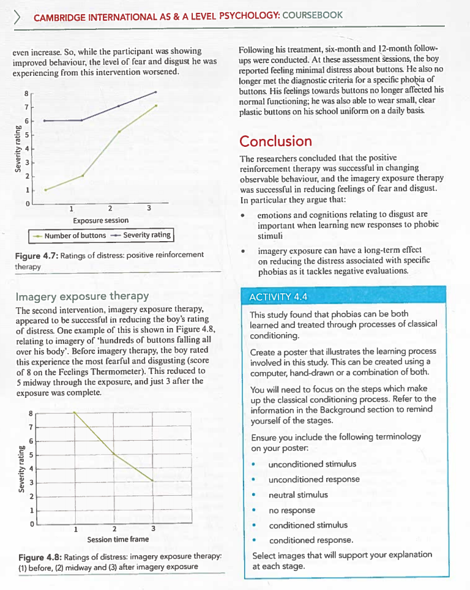
The outcome of the first intervention, positive reinforcement therapy, was a successful completion of all the exposure tasks listed in the hierarchy of fear. The boy was also observed approaching the buttons more positively. One example of this was that he started handling larger numbers of buttons during later sessions.
However, his subjective ratings of distress increased significantly between sessions two and three, and continued to rise (see Figure 4.7 below). By session four, a number of items on the hierarchy such as hugging his mother while she was wearing buttons had increased in dislike from the original scores.
Key finding: Despite his behaviour towards the fearful stimuli improving, his feelings of disgust, fear and anxiety actually increased as a result of the positive reinforcement therapy. This finding is consistent with previous research into evaluative learning: despite repeated exposure to the phobic object, evaluative reactions (i.e. disgust 厌恶) remain unchanged or even increase.
The second intervention, imagery exposure therapy, appeared to be successful in reducing the boy's rating of distress. One example of this is shown in Figure 4.8 below, relating to imagery of "hundreds of buttons falling all over his body". Before imagery exposure, the boy rated this experience as the most fearful and disgusting (score of 8 on the Feelings Thermometer). This reduced to 5 midway through the exposure, and just 3 after the exposure was complete.
Following his treatment, six-month and 12-month follow-ups were conducted. At these assessment sessions, the boy reported feeling minimal distress about buttons. He also no longer met the diagnostic criteria for a specific phobia of buttons. His feelings towards buttons no longer affected his normal functioning; he was able to wear small, clear plastic buttons on his school uniform on a daily basis.
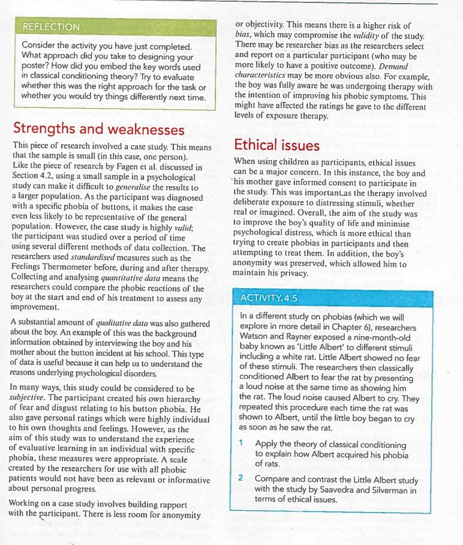
The researchers concluded that the positive reinforcement therapy was successful in changing observable behaviour, and the imagery exposure therapy was successful in reducing feelings of fear and disgust. In particular they argue that:
Core Conclusion: This is the first report in the child psychiatric literature documenting the importance of targeting disgust（厌恶） in treating a specific childhood phobia. Only upon switching from behavioural exposures to disgust imagery exposures and cognitions was the specific phobia effectively diminished — a phenomenon consistent with an evaluative learning（评估性学习） perspective.
This study found that phobias can be both learned and treated through processes of classical conditioning.
Create a poster that illustrates the learning process involved in this study. This can be created using a computer, hand-drawn or a combination of both.
You will need to focus on the steps which make up the classical conditioning process. Refer to the information in the Background section to remind yourself of the stages.
Ensure you include the following terminology on your poster:
Select images that will support your explanation at each stage.
However, the case study was highly valid; the participant was studied over a period of time, using several different methods of data collection. The researchers used standardised measures such as the Feelings Thermometer before, during and after therapy. Collecting and analysing quantitative data means the researchers could compare the phobic reactions of the boy at the start and end of his treatment to assess any improvement.
A substantial amount of qualitative data（定性数据） was also gathered about the boy. An example of this was the background information obtained by interviewing the boy and his mother about the button incident at school. This type of data is useful because it can help us to understand the reasons underlying psychological disorders.
In many ways, this study could be considered to be subjective. The participant created his own hierarchy of fear and disgust relating to his button phobia. He also gave personal ratings which were highly individual to his own thoughts and feelings. However, the aim of this study was to understand the experience of evaluative learning in an individual with specific phobia; these measures were appropriate. A scale created by the researchers for use with all phobic patients would not have been as relevant or informative about personal progress.
Working on a case study involves building rapport with the participant. There is less room for anonymity or objectivity. This means there is a higher risk of bias, which may compromise the validity of the study. There may be researcher bias as the researchers select and report on a particular participant (who may be more likely to have a positive outcome). Demand characteristics may be more obvious also.
This piece of research involved a case study. This means that the sample is small (in this case, one person). Like the sample of research by Fagen et al. discussed in Section 4.2, using a small sample in psychological study can make it difficult to generalise（推广） the results to a larger population. As the participant was diagnosed with a specific phobia of buttons, it makes the case even less likely to be representative of the general population.
Button phobias are extremely rare. The findings from studying one boy with a highly unusual phobia cannot be generalised to more common phobias (e.g., spiders, heights, blood).
The boy was fully aware he was undergoing therapy with the intention of improving his phobic symptoms. This might have affected the ratings he gave to the different levels of exposure therapy. The mother's ratings may also have been influenced by her desire to see her son improve.
In a different study on phobias (which we will explore in more detail in Chapter 6), researchers Watson and Rayner exposed a nine-month-old baby known as "Little Albert" to different stimuli including a white rat. Albert showed no fear of these stimuli. The researchers then classically conditioned Albert to fear the rat by presenting a loud noise at the same time as showing him the rat. The loud noise caused Albert to cry. They repeated this procedure each time the rat was shown to Albert, until the little boy began to cry as soon as he saw the rat.
| Aspect 方面 | Little Albert (Watson & Rayner, 1920) | Saavedra & Silverman (2002) |
|---|---|---|
| Participant age | 9-month-old infant（9个月婴儿） | 9-year-old boy（9岁男孩） |
| Consent 同意 | No consent (mother unaware of full procedure) 无知情同意 | Informed consent from boy AND mother 双方知情同意 |
| Purpose 目的 | To CREATE a phobia (induce fear) 制造恐惧症 | To TREAT an existing phobia 治疗已有恐惧症 |
| Harm caused 造成伤害 | Deliberately induced lasting fear 故意造成持久恐惧 | Temporary distress for long-term benefit 短期痛苦换取长期改善 |
| Right to withdraw 退出权 | Not possible (infant cannot object) 不可能（婴儿无法拒绝） | Participant sought help voluntarily 参与者主动求助 |
| Anonymity 匿名 | Identity known ("Little Albert") 身份已知 | Anonymity preserved 匿名得到保护 |
| Debriefing 事后说明 | No debriefing; phobia not removed 无事后说明；恐惧未被消除 | Full follow-up at 6 & 12 months 完整随访6个月和12个月 |
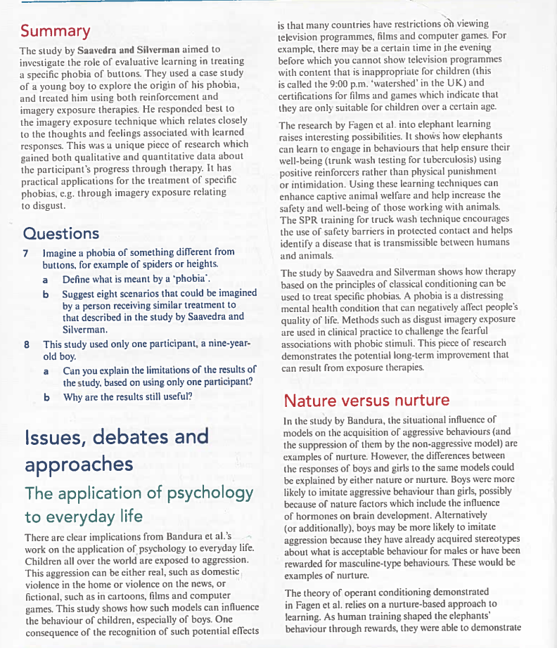
🎯 Saavedra & Silverman's stance: The study clearly supports a Nurture（后天） view. The phobia was acquired through a negative environmental experience (buttons falling), maintained through evaluative learning (disgust-based emotional association), and successfully treated through modified environmental exposures (imagery therapy + cognitive restructuring). No innate or genetic factors were identified as causes.
The individual and situational explanations debate is relevant to the study by Bandura. Imitation clearly suggests that situational factors matter in that the model is an aspect of the situation, as are the differences between male and female models. However, individual factors can also explain differences in imitation.
Individual factors in operant conditioning can explain why, even when girls and boys are exposed to the same models, their acquisition of behaviours differs because boys and girls may be differently rewarded for sex-typed behaviours. For example, a daughter may be praised for not fighting but a son praised for "sticking up for himself".
In the context of Saavedra & Silverman: Most of the elephants in Fagen's study successfully had their behaviour changed by situational changes; the SPR technique used by their mahouts. However, this finding was not consistently true of whole group. This suggests that individual differences (namely the age and personality of an elephant) may affect an animal's ability to learn new behaviours such as trunk washing. Similarly, the 9-year-old boy's individual characteristics (his specific disgust sensitivity, his cognitive ability to engage in imagery exercises) played a crucial role in the treatment outcome.
The children used in Bandura's study did not appear to have been given the opportunity to consent to the study, or to withdraw. Since children are particularly vulnerable, the study had the potential to cause distress, which is an ethical concern.
Although the head teacher at the nursery school is thanked in the study, so she was clearly aware of the procedure, there was no indication of whether the parents' consent was obtained. When children are used in studies, ethical guidelines typically suggest that parents' or guardians' consent should be obtained in addition to the child's own.
On a practical level, the use of children rather than adults in Bandura's study was ideal. Children have been exposed to much less violence than adults and there are likely to be fewer extraneous factors affecting their aggression levels (such as a bad day at work). In general, children have been naive than adults, so the participants would have been less likely to suspect that they were being shown aggressive models to investigate the effects of these on their own behaviour. These considerations all lead to the greater potential for representative effects of the procedure on children than if the same study were conducted with adult participants.
In Saavedra & Silverman's study: The child participant (aged nine) was asked for consent. In accordance with ethical guidelines, his mother also consented to his participation. This study was potentially highly distressing, as it involved both real and imagined exposure to frightening stimuli. Furthermore, the boy could be considered vulnerable as his specific phobia is a recognised mental health condition. The intention of the researchers was to treat his phobia and improve his quality of life, which was to justify the temporary distress caused during treatment.
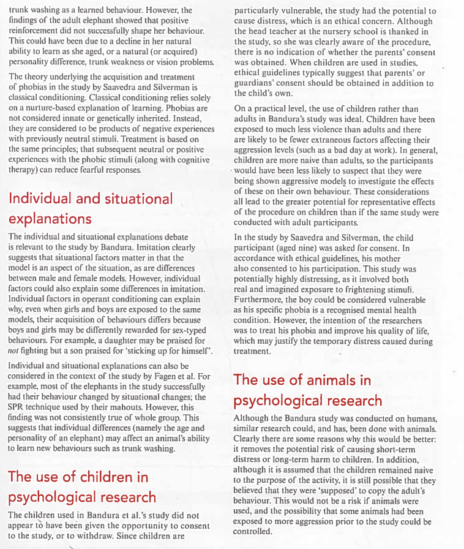
Although the Bandura study was conducted with humans, similar research could have been, and has been, done with animals. Clearly there are some reasons why this would be better:
Conversely, there would be disadvantages:
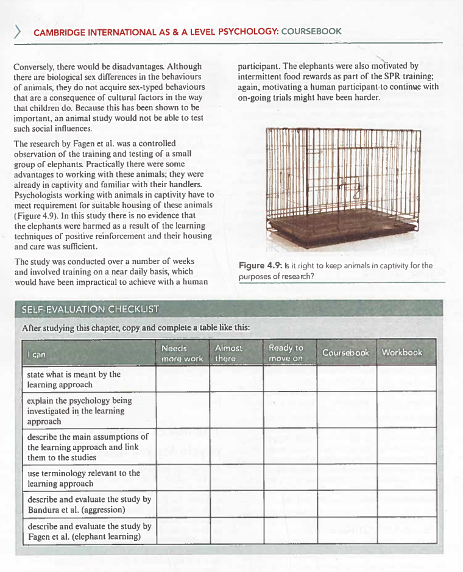
There are clear implications from Bandura et al.'s study on the application of psychology to everyday life. Children all over the world are exposed to aggression. This aggression can be either real, such as domestic violence in the home or violence on the news, or fictional, such as in cartoons, films and computer games. This study shows how such models can influence the behaviour of children, especially of boys.
One consequence of the recognition of such potential effects is that many countries have restrictions on viewing television programmes, films and computer games. For example, there may be certain time in the evening before which you cannot watch programmes with content that is inappropriate for children (this is called the 9:00 p.m. "watershed" in the UK) and certifications for films and games which indicate that they are only suitable for children over a certain age.
For Saavedra & Silverman's study: The research shows how therapy based on the principles of classical conditioning can be used to treat specific phobias. A phobia is a distressing mental health condition that can negatively affect people's quality of life. Methods such as disgust imagery exposure are used in clinical practice to challenge the fearful associations with phobic stimuli. This piece of research demonstrates the potential long-term improvement that can result from exposure therapies.
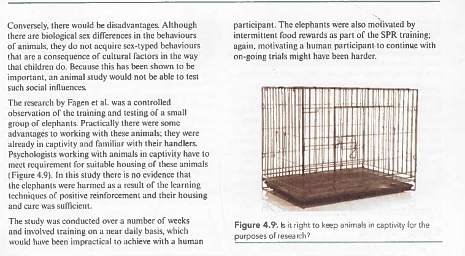
The study by Saavedra and Silverman aimed to investigate the role of evaluative learning in treating a specific phobia of buttons. They used a case study of a young boy to explore the origin of his phobia, and treated him using both the original reinforcement and imagery exposure therapies. He responded best to the imagery exposure technique which relates closely to the thoughts and feelings associated with learned responses.
This is a unique piece of research which gained both qualitative and quantitative data about the participant's progress through therapy. It has practical applications for the treatment of specific phobias, e.g. through imagery exposure relating to disgust.
| Item 项目 | Details 详情 |
|---|---|
| Researchers 研究者 | Lissette M. Saavedra & Wendy K. Silverman (2002) |
| Method 方法 | Case Study（案例研究）with qualitative & quantitative data |
| Sample 样本 | 1 participant: 9-year-old Hispanic American boy |
| Phobia onset 发病 | Age 5: buttons fell on him during art class |
| Duration 病程 | 4 years before treatment |
| Intervention 1 | Positive reinforcement / contingency management → Behaviour ✅, Distress ❌ WORSENED |
| Intervention 2 | Imagery exposure therapy + cognitive self-control → Distress REDUCED (8→3) ✅ |
| Follow-up 随访 | 6-month & 12-month: maintenance of gains ✅ |
| Key theoretical contribution | Evaluative learning framework; importance of targeting disgust (not just fear) |
| Approach 取向 | CIE Learning Approach — Classical Conditioning（学习取向：经典条件反射） |
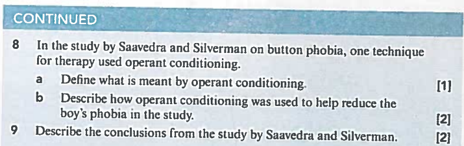
Q7. Imagine a phobia of something different from buttons, for example of spiders or heights.
a) Define what is meant by a 'phobia'. [? marks]
b) Suggest eight scenarios that could be imagined by a person receiving similar treatment to that described in the study by Saavedra and Silverman. [? marks]
Model Answer 要点：
(a) A phobia is an irrational, persistent fear of an object or event that creates anxiety and poses little real danger to the sufferer but leads to avoidance behaviour. It is a type of anxiety disorder characterised by excessive and unreasonable fear.
(b) Eight scenarios for a spider phobia hierarchy (from least to most distressing):
1. Looking at a picture of a small spider (rating: 1)
2. Looking at a picture of a large spider (rating: 2)
3. Being in the same room as a plastic spider toy (rating: 3)
4. Watching a video of a real spider (rating: 4)
5. Being in the same room as a real spider in a glass container (rating: 5)
6. Imagining a spider crawling on your arm (rating: 6)
7. Imagining hundreds of spiders falling on your body (rating: 7)
8. Imagining holding a large hairy tarantula in your hands (rating: 8)
Q8. This study used only one participant, a nine-year-old boy.
a) Can you explain the limitations of the results of the study, based on using only one participant? [? marks]
b) Why are the results still useful? [? marks]
Model Answer 要点：
(a) Limitations: (1) Cannot generalise findings to the wider population — n=1 is not representative; (2) Button phobias are extremely rare, so findings may not apply to more common phobias; (3) Risk of researcher bias — only one participant means results may be selectively reported; (4) Demand characteristics — the boy knew he was being treated and may have altered his ratings; (5) Lack of control group — cannot compare with no-treatment or alternative treatment conditions.
(b) Still useful because: (1) Provides rich, in-depth qualitative data about the experience of phobia and treatment; (2) First study to demonstrate the importance of targeting disgust (not just fear) in childhood phobias; (3) Generates hypotheses for future controlled group studies; (4) Has direct practical applications for clinicians treating similar cases; (5) High ecological validity — conducted in a real therapeutic setting with a genuine client; (6) Long-term follow-up (12 months) demonstrates durability of treatment effects.
Q8 (continued). In the study by Saavedra and Silverman on button phobia, one technique for therapy used operant conditioning.
a) Define what is meant by operant conditioning. [1 mark]
b) Describe how operant conditioning was used to help reduce the boy's phobia in the study. [2 marks]
Model Answer 要点：
(a) Operant conditioning is a form of learning where behaviour is shaped by its consequences. Behaviours followed by rewarding consequences become more likely to be repeated (reinforcement), while behaviours followed by punishing consequences become less likely. It differs from classical conditioning in that the organism actively operates on the environment to produce consequences.
(b) In this study, operant conditioning was used in Intervention 1 (positive reinforcement therapy / contingency management): (1) The boy's mother provided positive reinforcement (praise/rewards) contingent on the boy's successful completion of gradual exposure tasks to buttons; (2) Each time the boy successfully handled or approached buttons on the hierarchy, he was reinforced by his mother; (3) This was designed to increase approach behaviour and reduce avoidance through reinforcement. However, although the boy's behavioural approach improved (he handled more buttons), his subjective distress ratings actually increased — showing that operant conditioning alone was insufficient to address the underlying disgust-based evaluative learning.
Q9. Describe the conclusions from the study by Saavedra and Silverman. [2 marks]
Model Answer 要点：
The researchers concluded that:
(1) Positive reinforcement therapy successfully changed observable behaviour — the boy completed all items on the fear hierarchy and handled increasing numbers of buttons.
(2) BUT positive reinforcement alone did NOT reduce distress — the boy's subjective ratings of disgust/fear actually increased despite behavioural improvement, consistent with evaluative learning theory.
(3) Imagery exposure therapy WAS successful in reducing distress — targeting disgust emotions directly through cognitive techniques reduced ratings from 8 to 3.
(4) Emotions/cognitions relating to disgust are important when learning new responses to phobic stimuli — disgust must be addressed alongside fear.
(5) Treatment gains were maintained at long-term follow-up — the boy showed minimal distress at 6-month and 12-month assessments and no longer met DSM-IV criteria for specific phobia.
(6) This is the first evidence supporting the importance of targeting disgust (not just fear) in treating childhood phobias, conceptualised through the framework of evaluative learning.